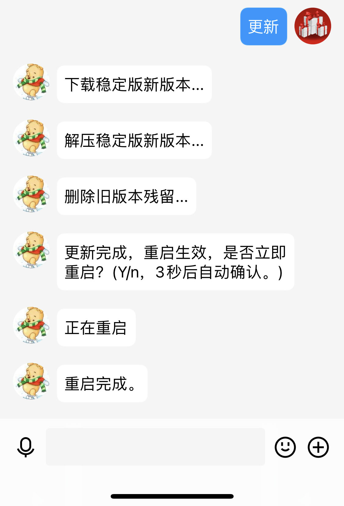

本页面目录
1.更新指令
1.1更新(linux系统版本)
1.2更新(windows系统版本)

1.3守护状态下的更新
1.关闭守护（ssh进入系统）systemctl stop autMan
2.手动启动autMan(进入autMan文件夹)使用命令./autMan -t启动交互后直接输入“更新”指令
3.待更新完成后会autMan会自动重启，关闭autMan后台：pkill -9 autMan
4.开启守护：systemctl start autMan
2.更新时的代理
软件发布在github上，
国内主机建议使用代理：
打开代理指令：set autMan download_use_ghproxy true
修改代理指令：set autMan ghproxy xxxx
国外主机建议关闭代理：
关闭代理命令：set autMan download_use_ghproxy false